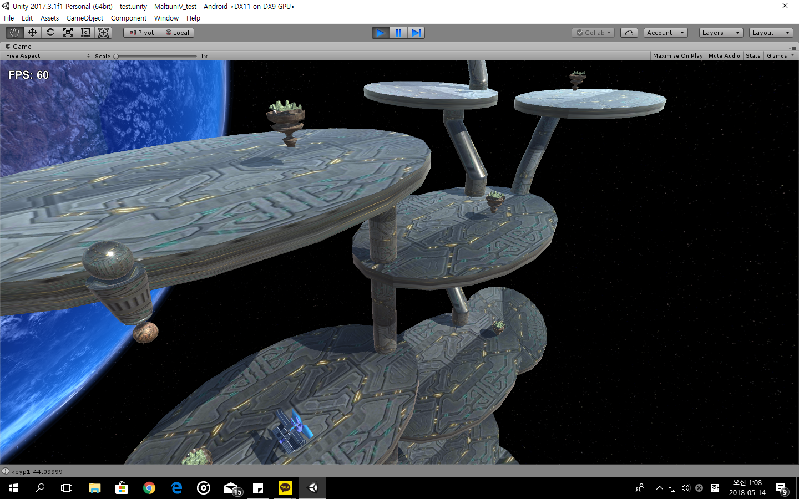
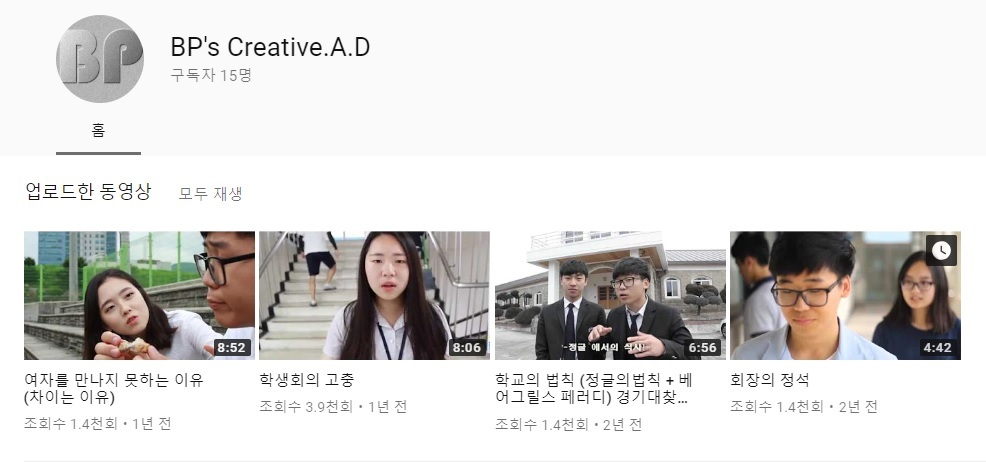
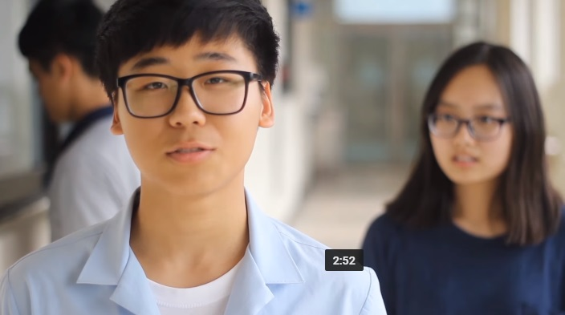
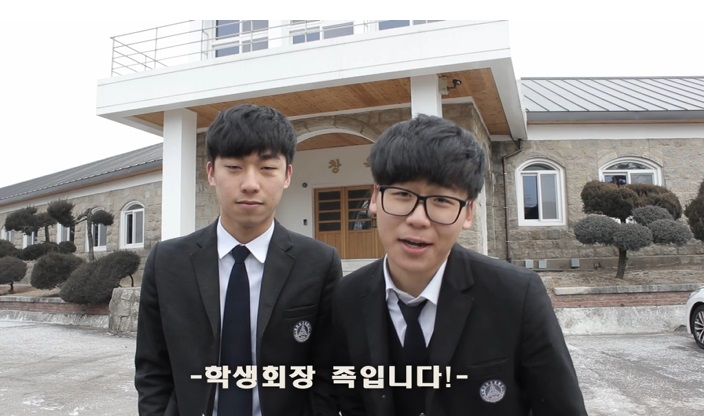
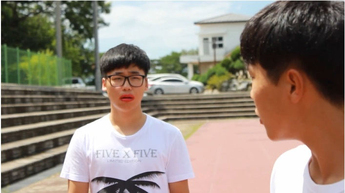

Languages
이러한 언어들을 다룰 수 있어요!
C
C++
JAVA
Python
Node j.s
HTML+CSS+JS
Tools + Platform
android
My Little Aquarium

고급 프로그래밍 시간에 안드로이트 스튜디오를 이용해 어플을 만드는 과제가 있어서 만들게 된 물고기 키우기 게임입니다. 이 게임은 3일에 걸쳐 만들어 졌고 두개의 서로다른 이미지가 정해진 범위 내로 겹치게 되면 이벤트를 일으켜 물고기에게 먹이를 먹이고, 사용자의 선택에 따라 성장이 완료 되었을 때 나오는 물고기가 달라지는 방식의 게임 입니다.
Unity
my star

마야를 이용해 케릭터와 지물들을 모델링한 후 유니티를 이용해 적을 피해 아이템을 먹는 게임을 만들어 보았습니다.
Processing
Arduino
Sorry! I will serve this page as soon as I can!
BP's Creative.A.D

고등학교 생활을 하면서 영상/광고 동아리 C.A.D 를 운영했습니다. 동아리 운영중, 여러 일이 있었지만 그 중 가장 기억에 남는 일은 학생회와 연결해 관련 영상을 찍고, 행사가 있을 때 상영하는 것이었습니다. 이 유튜브 채널은 이 활동을 위해서 만들어진 채널로서 4가지 작품을 담고 있습니다.
회장의 정석

사진 눌러 재생
제작
연출 :정윤찬,박영훈,변주영
촬영:변주영
편집:박영훈
인물
회장: 정윤찬 버스운전기사(부회장):박정근 여자(부회장):윤현지
햄버거,도움친구:진범진 짜장면:추재인 짬뽕:박영훈
장비:canon 600d ,50.8mm렌즈, 18-55mm 렌즈 ,ROED PRO
이 작품은 회장이 어떠한 자질을 가지고 있어야하는지에 대해 몸소 보여주는 회장 후보에 대한 영상입니다.
영상을 시작하게된 초반에 찍은 작품으로서 퀄러티는 낮지만 전교생 대중을 대상으로 상영한 첫 영상으로 개인적으론 굉장히 의미있는 영상입니다.
육민관 고등학교 소개-학교의법칙

사진 눌러 재생
제작
연출 :박영훈,변주영,정윤찬
촬영:변주영
촬영보조:박영훈
편집:1.박영훈2.변주영
인물
회장: 정윤찬 목도리도마뱀(포식자):조성* vj:변주영
창규오:오창규 선도부:김효엄,조성근,박영훈
장비:canon 600d ,50.8mm렌즈, 18-55mm 렌즈 ,ROED PRO
이 작품은 학교를 알리기 위해 촬영한 작품으로서 학교의 5가지 특성을 과장된 연출과 색다른 해석을 통해 웃음을 이끌어 내고 이를 통해 학교를 홍보하는 영상입니다.
학생회의 고충

사진눌러 재생
기획-학생회
촬영-변주영,정윤찬
편집-박영훈,변주영
출연-변주영,정윤찬,정윤주,심유정,정원기,신윤철,추재인,진범진
카메라-600D
이 작품은 학생회가 학교를 위해 일 하면서 학생들이나 선생님들께 서운했던 일들을 희화화를 통해 드러낸 작품입니다.
내가 연애를 하지 못 하는 이유
사진 눌러 재생
기획-박영훈,변주영,정윤찬
촬영-변주영
편집-박영훈 변주영
출연-정윤찬,박태성,손동희,신다해,오창규,심유정
카메라 600D 렌즈 18-55
마이크boya-pvm1000
남자들이 여자를 만나지 못 하는 이유를 과장해 재미있게 표현한 영상 입니다.
Made by : Byeon Ju Yeoung
in : 2018-06-14
메뉴 구동부
menu.hide();
pages.hide();
menu_slider.click(function(){
menu.slideToggle(500);
pages.slideToggle(500);
Intro_items.slideToggle(500);
});
jquery를 이용해서 메뉴의 슬라이드 업과 다운을 구현했습니다.
또한 메뉴가 숨겨져 있을 때는 페이지 소개 메시지와 이미지가 보이고 매뉴가 보이도록 버튼을 클릭하면 소개 메시지와 이미지가 사라지도록 했습니다.
coding
h테그를 이용해 내용을 구성하고
img 테그를 이용해 이미지를 띄웠습니다.
overflow:scroll 을 이용해 내부 콘텐츠가 div를 넘어가면 스크롤창이 생기도록 했습니다.
이미지 크기는 css에서 %로 지정해주어서 어느 화면에서나 적정한 크기로 볼 수 있도록 하왔습니다.
video
overflow:scroll 을 이용해 내부 콘텐츠가 div를 넘어가면 스크롤창이 생기도록 했습니다.
이미지 크기는 css에서 %로 지정해주어서 어느 화면에서나 적정한 크기로 볼 수 있도록 하였습니다.
그리고 이미지에 마우스를 가져가면
jquery중 hover기능과 animate을 이용해 사진이 확대되고 흐릿해집니다.
그리고 a 테그를 이용해 사진을 클릭하면 유튜브로 이동해 영상을 볼 수 있게 됩니다.
사용한 테그들
1. p
2. b
3. br
4. hr
5. 헤더테그
6. img
7. del
사용한 css 옵션
1. width
2. height
3. display
4. background관련
5. border관련
6. overflow
7. text-align
8. font-size